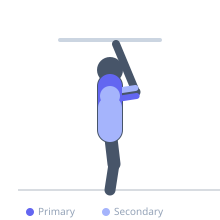
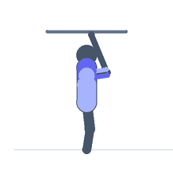

Exercise guide / Kipping Muscle-Up
Kipping Muscle-Up
The kipping muscle-up uses a hip-generated swing to create upward momentum that assists the transition from hanging to support position above the bar. Commonly used in functional fitness competitions, it places high demand on the shoulder complex and core during the aggressive hip-kick phase and requires exceptional timing to coordinate the kip with the pulling transition.
Primary muscles
latissimus dorsi
triceps brachii
Secondary muscles
biceps brachii
rectus abdominis
deltoid anterior
Stabilizers
erector spinae
Equipment
Smith Machine


Starting position
- Hang from the pull-up bar with a shoulder-width overhand grip. Begin a controlled kipping swing — arch and hollow alternately.
Setup
- Master the kipping pull-up and the strict muscle-up independently before combining them. Use chalk for grip security.
Steps
- Step 1: Establish a controlled kipping swing by alternating between hollow and arch positions.
- Step 2: At the peak of the front swing (hollow position), aggressively drive the hips upward.
- Step 3: Simultaneously pull the bar down to hip level, riding the momentum upward.
- Step 4: As the hips rise above bar level, transition by pressing the bar down and leaning forward.
- Step 5: Lock out the elbows at the top of the dip position.
- Step 6: Lower under control or redrop into the swing for the next repetition.
Coaching cues
- Hips drive up first, then the arms pull
- Think 'jump the bar' with your hips
- Link the kip to the pull — do not pause between them
Breathing
- Breathe rhythmically with the kipping swing cycle; hold breath through the transition.
Range of motion
- Full dead hang through to lockout in dip support position.
Tempo
- Explosive and rhythmic; rep speed driven by kipping timing
Common mistakes
- Initiating the pull before the hip kick is at peak — timing is critical
- Insufficient hip drive producing insufficient upward momentum
- Missing the false grip, making the transition impossible
Safety
- High shoulder shear forces during the kip — not suitable for shoulder injuries
- Prerequisite: proficiency in strict pull-ups and dips is essential
Training
- power: 3–8 reps
- power: 3–5 sets
- Rest: {'power': 180}